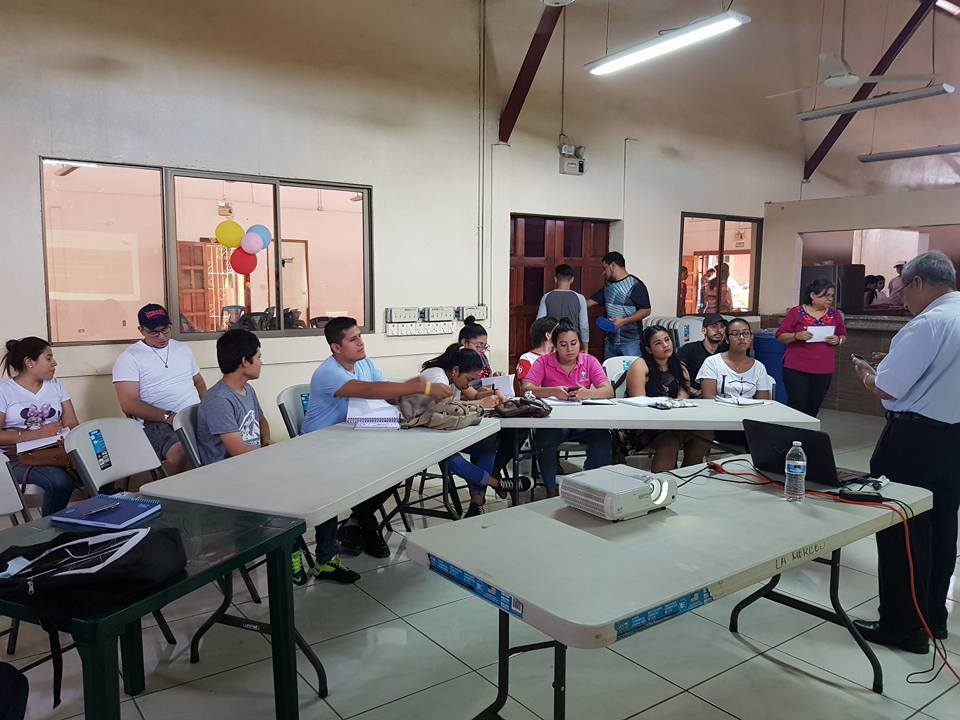

Oración inicial para todos los días.
Oh! Virgen Santísima de la Merced, redentora de los cautivos y Reina de los cielos y la tierra: Ante tu altar postrados, aquí estamos para solicitar tus auxilios y pedir tu bendición de Madre. No nos abandones. Ruega al Señor por nosotros y sigue ejercitando tu oficio de Patrona y abogada nuestra. Todo lo esperamos de Jesucristo en quien confiamos y de tu benigna y amorosa protección, que en tantas ocasiones nos ha librado del mal. Atiende a nuestra súplica y remedia la necesidad que te presentamos. Amén.
Sitio Web Oficial de nuestra Comunidad Parroquial, bajo la dirección del Pbro. Antonio Castro Granados.
1. Etimología.
La Virgen de La Merced o Nuestra Señora de Las Mercedes, es una Advocación Mariana venerada por los católicos de la Bienaventurada Virgen María. Es equivalente también a utilizar el nombre de: Virgen de la Misericordia. Su fiesta se celebra el día 24 de Septiembre.
2. Devoción.
La devoción a la Virgen de La Merced se difundió desde Cataluña y de ahí pasó al resto de España, luego a Francia e Italia, a partir del siglo XIII con la labor de redención de religiosos y cofrades. Posteriormente la Orden de La Merced participó en la evangelización americana lográndose la extensión y arraigue devocional a todo el territorio.
La historia nos indica que frailes Mercedarios participaron de la conquista de América. Fray Francisco de Bobadilla, militar de la orden de Santa María de la Merced, pasó a tierra firme en compañía de Pedro Arias de Ávila a la ciudad de León, en la que fundó el convento de La Merced en compañía de otros religiosos en el año 1528, siendo el primero que hubo en la provincia de Nicaragua.
Años más tarde fundó Pedrarias Dávila la ciudad de Nueva Segovia, en la que se organizaron los conventos de la Merced y San Francisco. Finalmente, en 1762 Fray Diego de Alcaraz ayudado de vecinos de la ciudad de León construyen el primer templo de la Merced, el cual fue destruido por la furia del volcán Momotombo.
3. Advocación.
a Advocación de la Virgen de La Merced, proviene del tipo de los que tienen su origen en una determinada imagen de la Virgen a la que se le tiene especial devoción en una población, región o familia religiosa.
Sección dedicada a mostrar una reseña histórica sobre nuestra comunidad parroquial.
Nuestra comunidad Parroquial se encuentra compuesta por doce (12) Pastorales, las cuales son:
“Es posible descubrir e iluminar la buena noticia presente en la realidad de cada historia y en el rostro de cada persona. Papa Francisco”
Imagenes de nuestro trabajo pastoral.